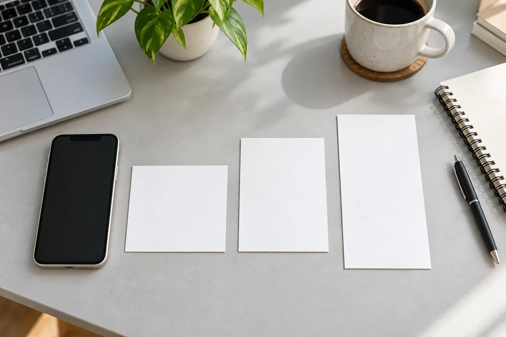

Medidas 2026 para tus publicaciones de Instagram
Tamaños de trabajo para imágenes, carruseles, Stories y Reels: prepara tus piezas sin perder textos importantes al recortar.

Tabla de medidas para diseñar
Estas medidas son plantillas prácticas para preparar contenido en 2026, no una lista exhaustiva de todos los formatos que Instagram admite. El tamaño de diseño y la forma en que se muestra una vista previa pueden ser distintos. Revisa siempre la pieza en la aplicación antes de publicarla.
| Uso | Ancho × alto | Proporción |
|---|---|---|
| Publicación cuadrada | 1080 × 1080 px | 1:1 |
| Publicación vertical | 1080 × 1350 px | 4:5 |
| Publicación horizontal | 1080 × 566 px | ≈ 1.91:1 |
| Stories | 1080 × 1920 px | 9:16 |
| Reels verticales | 1080 × 1920 px | 9:16 |
Publicaciones y carruseles
Para una pieza informativa, una plantilla vertical de 1080 × 1350 píxeles ofrece espacio para distribuir un título, una imagen y una explicación breve. El formato cuadrado sigue siendo una alternativa útil cuando tu composición necesita proporciones iguales.
En un carrusel, prepara todas las láminas con las mismas dimensiones para evitar recortes imprevistos. Mantén márgenes y una jerarquía consistente. La primera lámina presenta el tema; las siguientes lo desarrollan. No conviertas cada lámina en un bloque de texto demasiado pequeño.
Stories y Reels: diseña pensando en la interfaz
Una base vertical de 1080 × 1920 píxeles permite preparar Stories y Reels a pantalla completa. Deja espacio alrededor de títulos, subtítulos y elementos importantes: los botones, el nombre de la cuenta y otros controles pueden superponerse al contenido.
No existe un margen que resuelva todos los casos. Comprueba la vista previa y adapta la composición al lugar donde aparecerá. Evita colocar información esencial pegada al borde inferior o al lateral derecho de un video.
La portada también necesita revisión
La portada de un Reel puede verse recortada en otra superficie de Instagram. Sitúa el elemento principal cerca del centro y revisa cómo aparece en el perfil y en el feed. No supongas que todo el lienzo vertical será visible en cada contexto.
Guarda el archivo editable para ajustar el encuadre sin rehacer la pieza. Si vas a usar el contenido como anuncio, revisa además la vista previa de cada ubicación seleccionada.
Antes de publicar
Comprueba que el texto se lea en un celular, que las fotografías no estén estiradas y que la exportación mantenga suficiente calidad. Mira cada lámina del carrusel y reproduce el video completo con y sin sonido.
Esta guía propone tamaños de trabajo; no afirma que Instagram haya estrenado estas medidas en 2026. Los formatos y recortes pueden cambiar. Puedes consultar la ayuda de resolución de fotos de Instagram y la ayuda sobre proporciones de Reels para comprobar las condiciones vigentes.
Hagamos que tu marca tome forma.
En Getpes trabajamos contenido, video, campañas digitales y diseño. Conoce nuestro trabajo o cuéntanos qué necesita tu negocio.
Conversemos Ver portafolio